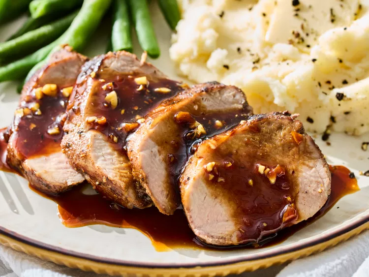

Honey Garlic Pork Tenderloin

Description
This honey garlic pork tenderloin, delicious and perfectly cooked, begins with a Chinese five spice-based rub,
and bakes while you make the sweet-savory honey garlic sauce.
Ingredients
- 1 (1 pound) pork tenderloin
- 1 tablespoon brown sugar
- 1 teaspoon kosher salt
- 1 teaspoon Chinese five spice powder
- 1 teaspoon garlic powder
- 1 teaspoon onion powder
- 1/2 teaspoon freshly ground black pepper
- 1 tablespoon vegetable oil
- 1/3 cup honey
- 1/4 cup low-sodium soy sauce
- 3 tablespoons cider vinegar
- 6 cloves garlic, minced
Steps
- Gather all ingredients.
- Preheat the oven to 375 degrees F (190 degrees C). Line a 10x15-inch baking pan with a wire rack.
- Trim silver skin and excess fat from the pork tenderloin.
- Combine brown sugar, salt, Chinese five spice powder, garlic powder, onion powder and black pepper in a
small
bowl.
- Sprinkle tenderloin all over with spice mixture, rubbing to coat.
- Heat oil in a 12-inch skillet over medium-high heat. Sear tenderloin until browned on all sides, 8 to 10
minutes. Place tenderloin on the rack in the prepared pan.
- Bake in the preheated oven until an instant-read thermometer inserted near the center reads 140 degrees F
(61
degrees C), 20 to 25 minutes.
- Remove from oven, tent with foil, and let rest 10 minutes. Internal temperature will rise to 145 degrees F
(63
degrees C) or higher.
- Meanwhile for sauce, heat honey, soy sauce, vinegar and garlic in the same skillet. Simmer until liquid
reduces
and thickens, about 5 minutes.
- Slice pork and serve with warm sauce.
Home